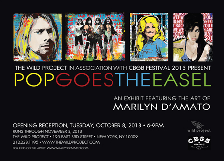

past exhibition |
|||
|
The Wild Project in Association with CBGB Festival 2013 Present Pop Goes the EaselOctober 8-November 3 For information, please contact: Marilyn D’Amato is a graphic designer based in New York City specializing in the music, event, and entertainment industries for over a decade. A graduate of NYC’s High School of Art and Design and The School of Visual Arts, Marilyn cut her teeth in the industry as a young singer/songwriter signed to Geffen Records (ALMO) in the mid 1990’s, and later a producer and independent record label manager. All the while, Marilyn lent her creativity and design aesthetic to many projects, and ultimately landed as the lead freelance designer for BMI (Broadcast Music Inc.) Marilyn’s designs have been featured in many high profile projects, events, and publications including Rolling Stone, Billboard, Variety, The Rock & Roll Hall of Fame, The Grammy Awards, The ACMs, among others, and have also appeared in the set design for television programs and feature films including HBO’s “The Sopranos,” 20th Century Fox’s “Mr. & Mrs. Smith,” and Paramount’s “School of Rock.” Influenced by the urban landscape around her, as well as an obsession with pop art, Americana, and the perfect font, Marilyn embarked on creating original artwork, which has shown in galleries in NYC and has been privately commissioned. It was her vast collection of musician’s promo photos that inspired the art for the “Pop Goes The Easle” exhibit, which will be part of the CBGB’s Art, Music and Film Festival 2013. Marilyn is thrilled to debut her music-based mixed media canvases at what will be her first ever solo show as an artist. |
exhibition archive |
|||
| 2016 | 2015 | 2014 | 2013 |
| 2011 | 2010 | 2009 | 2008 |